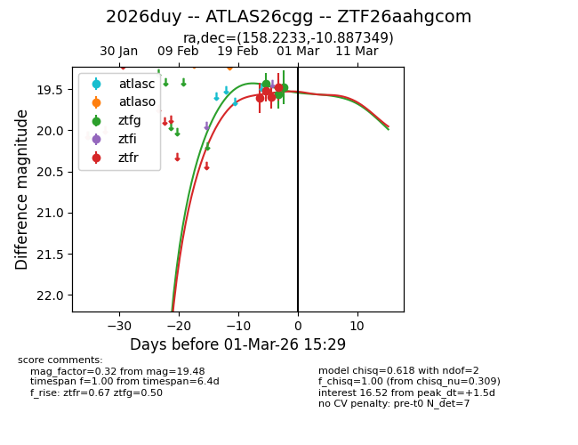
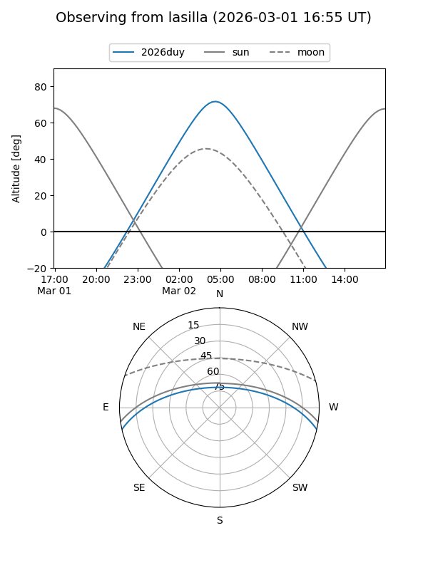
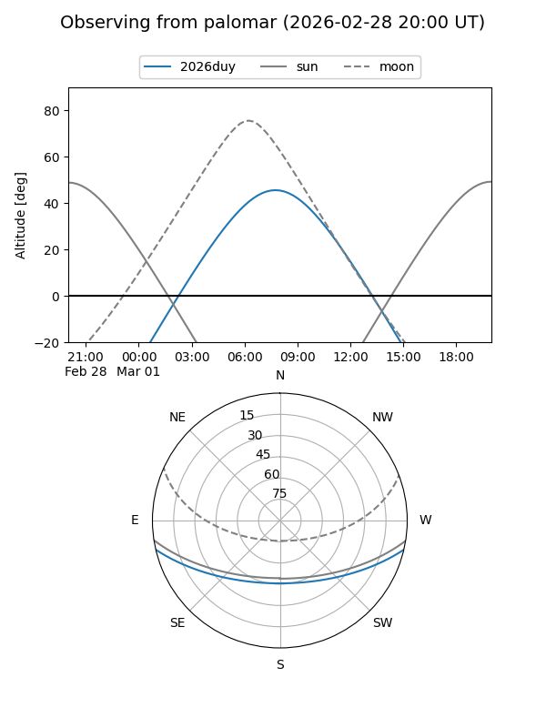
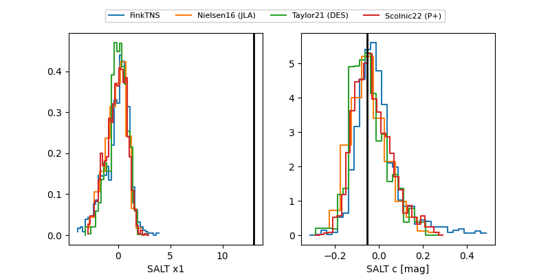

2026duy
Target 2026duy at 2026-03-01 15:32
Aliases and brokers:
FINK: link
Lasair: link
ALeRCE: link
TNS: link
YSE: link
alt names
ZTF26aahgcom (ztf,fink_ztf)
2026duy (tns,yse)
ATLAS26cgg (atlas)
Coordinates:
equatorial (ra, dec) = 158.2233,-10.88735
equatorial (HMS+DMS) = 10:32:53.60,-10:53:14.46
galactic (l, b) = (256.8009,+39.26860)
Flags:
Photometry:
last ztfg=19.48, ztfr=19.47
3 ztfg, 4 ztfr detections
Lightcurve

Visibility


Additional plots
